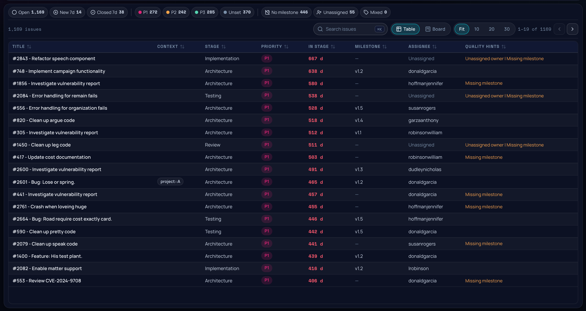

A table when you need the columns
The same issues as rows: title with a link to GitLab, context labels, stage, priority, days in stage, milestone, assignee, and quality hints. Ten rows per page by default, each page shown in full.
10 · 20 · 30 rows
pinned header
